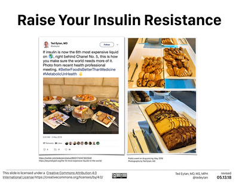

- Time Required
- 8–10 hours, including reading time

Welcome to Week Eight of the course. This week we continue work on your oral presentation. You should spend time jotting out what you plan to say and beginning to think about your slides.
Holidays & Events This Week
If you observe these holidays and need me to adjust your due dates, send me a message in Canvas.
Objectives for this Module
After completing this week’s activities, you address the following course objectives:
- Analyze the rhetorical situation and determine the appropriate audience or users of written communication, considering the needs of global audiences and people with disabilities. [CLO 1]
- Use conventions of various workplace genres, such as proposals, instructions, correspondence, reports, and slide decks, with understanding of how the genre conventions can be used as heuristics and as principles of arrangement. [CLO 4]
- Collaborate with classmates in planning, researching, writing, revising, and presenting information. [CLO 5]
Activities to Complete
Due Dates
- All work is due by 11:59 PM on Friday, March 17.
- Grace Period:
- Ends at 11:59 PM on Wednesday, March 22 for your Check-in Survey.
- Ends at 11:59 PM on Friday, April 28 for the rest of the week’s work.
📚 To Read This Week
Read any materials that you did not get to last week:
📝 To Write This Week
- Continue work on your Pitch Assignment, using the these resources:
- Try out strategies from the course by submitting these activities:
💬 To Discuss This Week
- Optional ways to discuss class issues:
📓 To Check-In This Week
Photo credit: 2018.05 Low Carb and Low Carbon Presentation Slides 412 by Ted Eytan on Flickr, used under a CC-BY-SA 2.0 license.